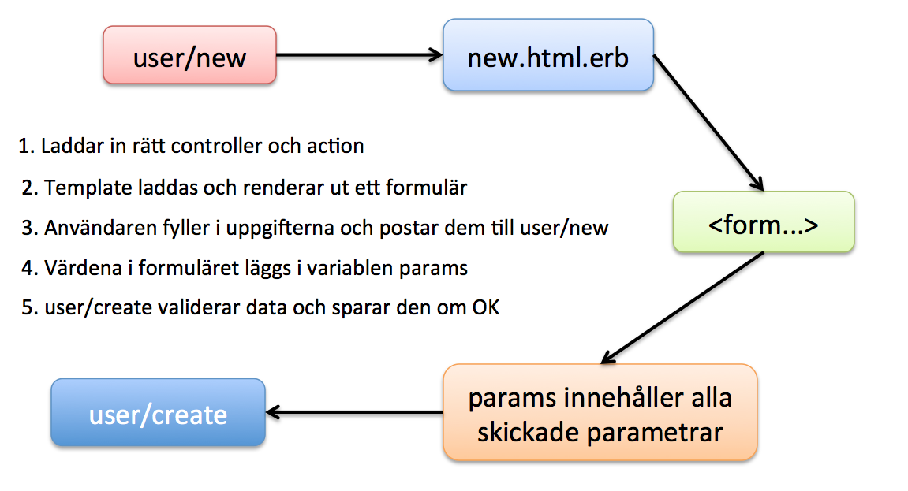
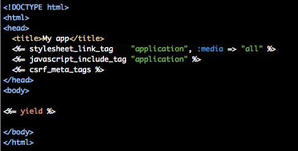
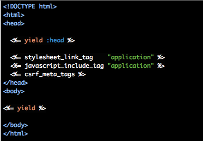
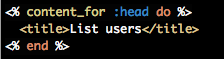
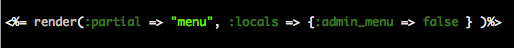
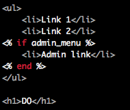
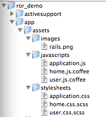
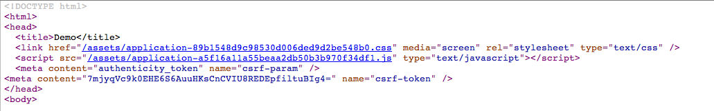
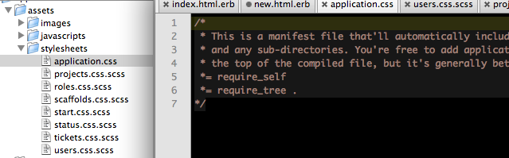

Webbramverk, 1DV450
Linnéuniversitetet, vt 2015
Ruby on Rails III
Vad har hänt sen sist!

- Inloggning - has_secure_password
- Bootstrap
- Formulär för att lägga till spelare
- Hur är säkerheten?
https://github.com/thajo/1dv450_demo
Strong parameters
Du måste specifikt tala om vilka egenskaper du vill kunna göra en mass-assignment på.
@user_to_create = User.new(params[:user]) # vi kan inte lita på användaren
# Mohahaha!
POST http://www.example.com/user/signup?user[password]=owned&user[admin]=1
Se film på kursens webbplats
The select helper
Många formulär vill använda en select-box/dropdown och i många fall vill man koppla den
mot en annan Model (ex. "lägg till ett team_id för en player")
# select-tagg där team_id är främmande nyckel i players-tabellen
<%= f.select :team_id,
options_from_collection_for_select(Team.all, :id, :name) %>
<select id="player_team_id" name="player[team_id]">
<option value="1">
Tottenham Hotspur FC
</option>
</select>
http://guides.rubyonrails.org/form_helpers.html#making-select-boxes-with-ease
Create - att skapa en resurs
new: Laddar ett formulär som användaren kan fylla i
create: Tar användarens uppgifter och sparar (om det går bra)

Layout
I filen app/views/layouts/application.html.erb

yield => Där kopieras din vy in när sidan rendreras
Namngivna yields
Det finns såklart möjlighet att länka in

I din vy...

Layout och template partials

Partial templates
Du kan bryta ut vy-kod i partials som kan laddas in från templates
Ger bra stöd för DRY (Don't repeat yourself)
Du skapar en fil i app/views/<controller_name> men döper den med ett underscore i början
Ex. _form.html.erb
# anropas i vyn t.ex. edit.html.erb
<%= render "form" %>
Partial templates - parameters
partial HTML definierad i "_menu.html.erb"
Denna render laddar då in denna - körs i en template

I detta fall skickas false in och sista länken visas inte

Skapa en egen layout
Skapa en ny fil i app/views/layouts ex. "admin.html.erb"
Denna kan du sedan använda att tilldela de controllers du vill ska använda den
class AdminController < ApplicationController
# Talar om att jag vill använda layouten admin.index.html
layout "admin"
# code goes here
end
Olika layout per actions
class TicketController < ApplicationController
layout :find_layout
# ...
private
def find_layout
case action_name
when "new", "create"
"creation_layout"
when "index"
"list_layout"
else
"application"
end
end
end
Assets - Bilder, JavaScript och CSS
Sprockets Asset Pipeline (gem) - default
minifiering, konkatenering, CoffeeScript, Sass ERB
Läggs i de tre mapparna i app/assets

"förkompilera/precompile" till produktionsläge
http://guides.rubyonrails.org/asset_pipeline.html
Hur funkar det?
filen app/assets/javascripts/application.js är en manifest-fil som talar om vilka
filer som behövs i applikationen. (Du kan skapa egna)
// i filen app/assets/javascripts/application.js
//= require jquery
// require jquery_ujs
//= require_tree .
# du länkar in manifestfiler på detta sätt
<%= stylesheet_link_tag "application" %>
<%= javascript_include_tag "application" %>
Exempel på kompilerade assets
En master-fil skapas med ett MD5-hashat namn (fingerprint) för att underlätta cachningsprocessen (i production)

Liknande sätt för CSS

Skapas en CSS-fil för varje Controller

Olika dataformat
Foto cc by Birger Eriksson:
https://www.flickr.com/photos/eggib/
class TeamsController < ApplicationController
respond_to :json, :xml, :html # the formats allowed to respond to
# this metods i called for /teams/:id
def show
@team = Team.find(params[:id])
# depending on format (.xml, .json) we will render the body
respond_with(@team) do |format|
format.json {
render :json => @team.to_json(
:only => [:name, :nickname, :created_at],
:include => [ :players => { :only => [:name]}]
)
}
format.xml {
render :xml => @team.to_xml(
:only => [:name, :nickname, :created_at],
:include => [ :players => { :only => [:name]}]
)
}
end
end
Resultatet
Vi anropar /teams/1.json
{
"name": "Tottenham hotspur FC",
"nickname": "Spurs",
"created_at": "2015-01-28T08:31:37.034Z",
"players": [
{
"name": "Harry Kane"
}
]
}
Bättre att överskugga serializable_hash i modellen?
# in model Team.rb
def serializable_hash (options={})
options = {
only: [:name, :nickname],
include: [:players],
methods: [:self_link]
}.update(options)
super(options)
end
def self_link
# the configuration is set i config/enviroment/{development|productions}.rb
# include Rails.application.routes.url_helpers - MVC?
{ :self => "#{Rails.configuration.baseurl}#{team_path(self)}" }
end
# i controllern skrivs t.ex.
@team = Team.find(1)
respond_with @team
Resultat
{
"name": "Tottenham hotspur FC",
"nickname": "Spurs",
"created_at": "2015-01-28T08:31:37.034Z",
"self_link": {
"self": "http://localhost:3000/teams/1"
},
"players": [
{
"name": "Harry Kane"
}
]
}
Andra sätt
RABL - Ruby API Builder Language
Active Model Serializers
Ruby on rails i produktion
- rails server -e production
- Nu körs inställningarna för produktionsdatabasen (bör ej vara SQLite3)
- rake db:migrate RAILS_ENV="production"
- Se till att eventuella konfigurationer finns med i produktionsläget
- RAILS_ENV=production bin/rake assets:precompile
- secret_key_base måste sättas i produktionsläge "config/secrets.yml"
- config.serve_static_assets = true, i enviroments/production.rb om du kör lokalt med webbrick
Peer-reviews
- Konstruktiv feedback! Kursledningen tittar hur du ger feedback!
- Realease på github 13:00 onsdag 11 februari, anmäl att du är klar på kurshemsidan
- Varje student får två andra att ge feedback på
- Gör issues på github till varandra för feedback
- Kommer finnas ett formuär att fylla i på kurshemsidan till varje peer-review
- Ska vara gjord senast måndag
- Ge instruktioner till din peer, Hur startar man din applikation...inloggningsuppgifter
- Var medvetna om du bör börja med APIet innan peer-reviewdelen är klar
- Mer information kommer på kurshemsidan
 Denna presentation är licensierat under en
Creative Commons Erkännande 3.0 Unported Licens. (Där inte annat anges)
Denna presentation är licensierat under en
Creative Commons Erkännande 3.0 Unported Licens. (Där inte annat anges)